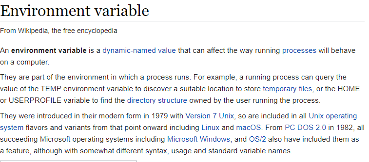
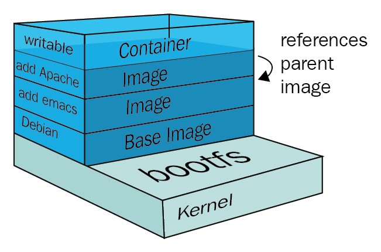
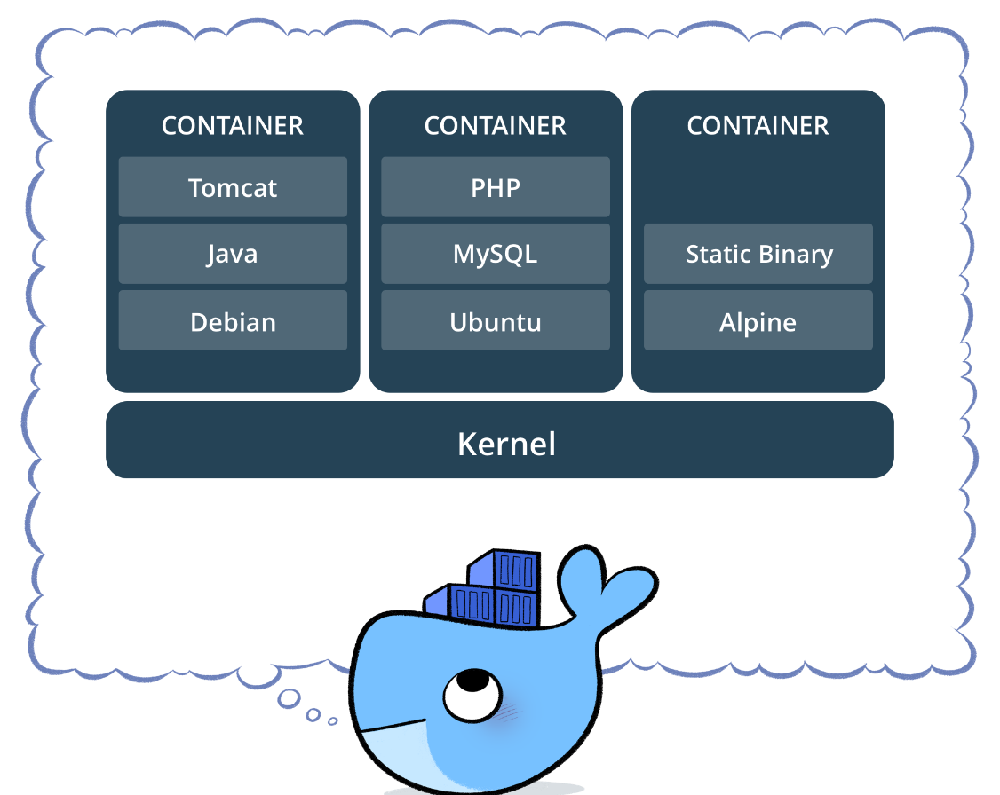
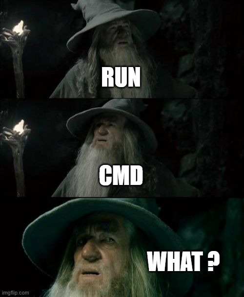
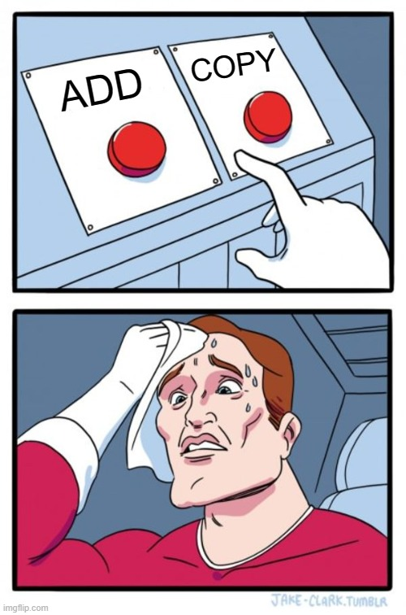

Docker Build Your Own Container
Contents
Docker Build Your Own Container¶

Let’s start with an example¶
Node Bulletin¶
%%bash
git clone https://github.com/dockersamples/node-bulletin-board
cd node-bulletin-board/bulletin-board-app
Let’s see the Docker File¶
FROM node:current-slim
WORKDIR /usr/src/app
COPY package.json .
RUN npm install
EXPOSE 8080
CMD [ "npm", "start" ]
COPY . .
Build Image¶
%%bash
docker image build -t bulletinboard:1.0 .
Sending build context to Docker daemon 45.57kB
Step 1/7 : FROM node:current-slim
current-slim: Pulling from library/node
6d28e14ab8c8: Pulling fs layer
467f76cd7b76: Pulling fs layer
5267769fc2ec: Pulling fs layer
0001c8b9bd2f: Pulling fs layer
2469aef99d27: Pulling fs layer
0001c8b9bd2f: Waiting
2469aef99d27: Waiting
467f76cd7b76: Verifying Checksum
6d28e14ab8c8: Verifying Checksum
6d28e14ab8c8: Download complete
0001c8b9bd2f: Verifying Checksum
2469aef99d27: Verifying Checksum
2469aef99d27: Download complete
6d28e14ab8c8: Pull complete
467f76cd7b76: Pull complete
5267769fc2ec: Verifying Checksum
5267769fc2ec: Download complete
5267769fc2ec: Pull complete
0001c8b9bd2f: Pull complete
2469aef99d27: Pull complete
Digest: sha256:1d54d3263d04bbf017ec705b7d4418a71b63d0696cabc0fcc77a1167e346dcb9
Status: Downloaded newer image for node:current-slim
---> 26932a190e66
Step 2/7 : WORKDIR /usr/src/app
---> Running in 2894363bc740
Removing intermediate container 2894363bc740
---> a87873d56853
Step 3/7 : COPY package.json .
---> 61330eb565b1
Step 4/7 : RUN npm install
---> Running in c6082f3c0985
> ejs@2.7.4 postinstall /usr/src/app/node_modules/ejs
> node ./postinstall.js
Thank you for installing EJS: built with the Jake JavaScript build tool (https://jakejs.com/)
npm notice created a lockfile as package-lock.json. You should commit this file.
npm WARN vue-event-bulletin@1.0.0 No repository field.
npm WARN The package morgan is included as both a dev and production dependency.
added 90 packages from 168 contributors and audited 221 packages in 5.577s
found 0 vulnerabilities
Removing intermediate container c6082f3c0985
---> 7aaab7eabaab
Step 5/7 : EXPOSE 8080
---> Running in b8ebdaa7090c
Removing intermediate container b8ebdaa7090c
---> 107b471a8144
Step 6/7 : CMD [ "npm", "start" ]
---> Running in 74afb99c6891
Removing intermediate container 74afb99c6891
---> 7d44df2514d3
Step 7/7 : COPY . .
---> b54f475b5ea8
Successfully built b54f475b5ea8
Successfully tagged bulletinboard:1.0
Run your image as a container¶
%%bash
docker container run --publish 8000:8080 --detach --name bb tapbulletinboard:1.0
14e8c34595b28d0a194a3c8f5d53f1cd07051411d8110d88f81cf8e98a831362
Is running ?¶
%%bash
docker ps
CONTAINER ID IMAGE COMMAND CREATED STATUS PORTS NAMES
db9ff52b012b tapbulletinboard:1.0 "docker-entrypoint.s…" 3 minutes ago Up 3 minutes 0.0.0.0:8000->8080/tcp bb

Build syntax¶
$ docker build -f /path/to/a/Dockerfile
FROM¶
First instruction after comments/parser directives/arg
Indicates the Image source (download from the registry)
Can use ARG parameter
it’s your baby!
FROM [--platform=<platform>] <image>[:<tag>] [AS <name>]
ARG¶
Define enviroment variabile used in the Builder
ARG <name>[=<default value>]
Argument can be used in DockerFile FROM, RUN, … also passed during the BUILD
$ docker build --build-arg user=what_user
ARG are referenced using standard ${VARIABLE} notation
Be careful with ARG
scope starts from the line where is defined
ENV wins on ARG in RUN
There are a set of predefined ARG (like HTTP_PROXY)
Don’t pass secret in ARG
ENV¶
Define enviroment variabile that persist in the container
ENV <key> <value>
ENV <key>=<value> ...
Enviroment variable can be also passed while starting
$ docker run -e "deep=purple"
https://docs.docker.com/engine/reference/builder/#env

RUN (shell mode)¶
Execute commands in the layer on top of the current image
(shell form, the command is run in a shell, which by default is /bin/sh -c on Linux or cmd /S /C on Windows)
RUN <command>
The default shell for the shell form can be changed using the SHELL command.
In the shell form you can use a \ (backslash) to continue a single RUN instruction onto the next line. For example, consider these two lines:
RUN /bin/bash -c 'source $HOME/.bashrc; \
echo $HOME'
https://docs.docker.com/engine/reference/builder/#env

RUN (exec mode)¶
RUN ["executable", "param1", "param2"] (exec form)
Unlike the shell form, the exec form does not invoke a command shell. This means that normal shell processing does not happen.
To use a different shell, other than ‘/bin/sh’, use the exec form passing in the desired shell. For example,
RUN ["/bin/bash", "-c", "echo hello"]
For example, RUN [ "echo", "$HOME" ] will not do variable substitution on $HOME. If you want shell processing then either use the shell form or execute a shell directly, for example:
RUN [ "sh", "-c", "echo $HOME" ].
The exec form is parsed as a JSON array, which means that you must use double-quotes (“) around words not single-quotes (‘).
https://docs.docker.com/engine/reference/builder/#run

CMD (exec form)¶
The main purpose of a CMD is to provide defaults for an executing container. These defaults can include an executable, or they can omit the executable, in which case you must specify an ENTRYPOINT instruction as well.
Exec form, this is the preferred form
CMD ["executable","param1","param2"]
Like RUN exec form do not invoke a shell, so in order to force the variabile substituion done by shell use
CMD [ "sh", "-c", "echo $HOME" ]
CMD (shell form)¶
The main purpose of a CMD is to provide defaults for an executing container. These defaults can include an executable, or they can omit the executable, in which case you must specify an ENTRYPOINT instruction as well.
CMD command param1 param2
If you want to run your
FROM ubuntu
CMD echo "This is a test." | wc -l
https://docs.docker.com/engine/reference/builder/#cmd

Confused ?¶
RUN actually runs a command and commits the result
CMD does not execute anything at build time, but specifies the intended command for the image.
ENTRYPOINT (exec form)¶
An ENTRYPOINT allows you to configure a container that will run as an executable.
ENTRYPOINT ["executable", "param1", "param2"]
$ docker run -i -t --rm -p 80:80 nginx
https://docs.docker.com/engine/reference/builder/#entrypoint
EXPOSE¶
Define enviroment variabile that persist in the container
EXPOSE <port> [<port>/<protocol>...]
The EXPOSE instruction does not actually publish the port.
It functions as a type of documentation between the person who builds the image and the person who runs the container, about which ports are intended to be published.
To actually publish the port when running the container, use the -p flag on docker run to publish and map one or more ports, or the -P flag to publish all exposed ports and map them to high-order ports.
$ docker run -p 80:80/tcp -p 80:80/udp
ADD¶
The ADD instruction copies new files, directories or remote file URLs from
ADD [--chown=<user>:<group>] <src>... <dest>
ADD [--chown=<user>:<group>] ["<src>",... "<dest>"] (this form is required for paths containing whitespace)
The
ADD test relativeDir/ # adds "test" to `WORKDIR`/relativeDir/
ADD test /absoluteDir/ # adds "test" to /absoluteDir/
COPY¶
The COPY instruction copies new files or directories from
COPY [--chown=<user>:<group>] <src>... <dest>
COPY [--chown=<user>:<group>] ["<src>",... "<dest>"] (this form is required for paths containing whitespace)

VOLUME¶
The VOLUME instruction creates a mount point with the specified name and marks it as holding externally mounted volumes from native host or other containers.r
VOLUME ["/data"]
The docker run command initializes the newly created volume with any data that exists at the specified location within the base image. For example, consider the following Dockerfile snippet:
FROM ubuntu
RUN mkdir /myvol
RUN echo "hello world" > /myvol/greeting
VOLUME /myvol```
This Dockerfile results in an image that causes docker run to create a new mount point at /myvol and copy the greeting file into the newly created volume.
https://docs.docker.com/engine/reference/builder/#env
WORKDIR¶
Define enviroment variabile that persist in the container
WORKDIR /path/to/workdir
The WORKDIR instruction sets the working directory for any RUN, CMD, ENTRYPOINT, COPY and ADD instructions that follow it in the Dockerfile. If the WORKDIR doesn’t exist, it will be created even if it’s not used in any subsequent Dockerfile instruction.
WORKDIR /a
WORKDIR b
WORKDIR c
RUN pwd
The output of the final pwd command in this Dockerfile would be /a/b/c.
https://docs.docker.com/engine/reference/builder/#env
Cheat Sheet¶
Docker Commit¶
Don’t do it.
No, really, I know it’s tempting, but if you’re ever going to use this container image again, don’t use commit. There are significant downsides to the commit approach:
You can’t reproduce the image
You can’t change the base image
Creating a Dockerfile might feel a bit like work, but if you might want this image again, it’s the approach you need to take.